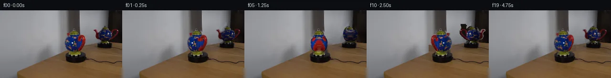

![首帧]()

Round 00
2026-11-05T04:51:50.372376+00:00像素候选变化代码 +293/−0inspection 更新
pixels 583302e139d8bcf2 · code 76e7f6716cb80c67
查看本轮 generate.py 真实 diff
--- previous/generate.py +++ current/generate.py @@ -0,0 +1,293 @@ +#!/usr/bin/env python3 +"""Generate the 20-frame locked-shot teapot rotation from first_frame.png. + +All synthesis is local image processing. The source photograph supplies every +texture; analytical warps and antialiased masks provide the rotational motion. +""" + +from pathlib import Path +import math + +import cv2 +import numpy as np +from PIL import Image, ImageDraw, ImageFont + +from artifact_io import save + + +ROOT = Path(__file__).resolve().parent +W, H = 256, 144 +N = 20 + + +def ellipse_alpha(cx, cy, rx, ry, shape=(H, W), softness=0.75): + """Analytic antialiased ellipse alpha.""" + yy, xx = np.indices(shape, dtype=np.float32) + d = np.sqrt(((xx - cx) / rx) ** 2 + ((yy - cy) / ry) ** 2) + return np.clip((1.0 + softness - d) / softness, 0.0, 1.0) + + +def polygon_mask(points, shape=(H, W)): + mask = np.zeros(shape, np.uint8) + cv2.fillPoly(mask, [np.asarray(points, np.int32)], 255, lineType=cv2.LINE_AA) + return mask.astype(np.float32) / 255.0 + + +def over(dst, rgb, alpha): + """Alpha-composite float/uint8 RGB into dst in place.""" + a = np.clip(alpha, 0.0, 1.0)[..., None].astype(np.float32) + dst[:] = np.clip(dst.astype(np.float32) * (1.0 - a) + rgb.astype(np.float32) * a, 0, 255).astype(np.uint8) + + +def colored_part_layer(source, box, extra_mask=None): + """Extract a colorful photographed side part, rejecting neutral background.""" + x0, y0, x1, y1 = box + hsv = cv2.cvtColor(source, cv2.COLOR_RGB2HSV) + sat = hsv[..., 1] + val = hsv[..., 2] + region = np.zeros((H, W), np.uint8) + # Saturated lacquer plus its dark, immediately adjacent antialiased edge. + selected = ((sat > 62) & (val > 24)).astype(np.uint8) * 255 + region[y0:y1, x0:x1] = selected[y0:y1, x0:x1] + if extra_mask is not None: + region = cv2.bitwise_and(region, (extra_mask * 255).astype(np.uint8)) + core = cv2.morphologyEx(region, cv2.MORPH_CLOSE, np.ones((3, 3), np.uint8)) + grown = cv2.dilate(core, np.ones((3, 3), np.uint8), iterations=1) + alpha = cv2.GaussianBlur(grown.astype(np.float32) / 255.0, (3, 3), 0.45) + return source.copy(), np.clip(alpha, 0, 1) + + +def warp_layer(rgb, alpha, axis_x, scale_x, dy=0.0, brightness=1.0): + """Foreshorten a photographed layer around the pot's vertical rotation axis.""" + # Keep a tiny projected width at end-on phases; sign retains the side swap. + if abs(scale_x) < 0.055: + scale_x = math.copysign(0.055, scale_x if scale_x else 1.0) + mat = np.array([[scale_x, 0.0, axis_x * (1.0 - scale_x)], [0.0, 1.0, dy]], np.float32) + wrgb = cv2.warpAffine(rgb, mat, (W, H), flags=cv2.INTER_LINEAR, + borderMode=cv2.BORDER_CONSTANT, borderValue=(0, 0, 0)) + wa = cv2.warpAffine(alpha, mat, (W, H), flags=cv2.INTER_LINEAR, + borderMode=cv2.BORDER_CONSTANT, borderValue=0) + wrgb = np.clip(wrgb.astype(np.float32) * brightness, 0, 255).astype(np.uint8) + return wrgb, np.clip(wa, 0, 1) + + +def spherical_body(source, cx, cy, rx, ry, angle, alpha_override=None, reflected=False): + """Rotate the photographed body texture on an analytical spherical surface.""" + yy, xx = np.indices((H, W), dtype=np.float32) + v = (yy - cy) / ry + row_radius = rx * np.sqrt(np.clip(1.0 - v * v, 0.0, 1.0)) + u = np.divide(xx - cx, np.maximum(row_radius, 0.15)) + phi = np.arcsin(np.clip(u, -1.0, 1.0)) + # A horizontal reflection reverses the phase visible in the mirror. + a = -angle if reflected else angle + src_u = np.sin(phi + a) + map_x = cx + row_radius * src_u + map_y = yy.copy() + sampled = cv2.remap(source, map_x.astype(np.float32), map_y.astype(np.float32), + cv2.INTER_CUBIC, borderMode=cv2.BORDER_REFLECT_101) … diff truncated; 206 more lines …